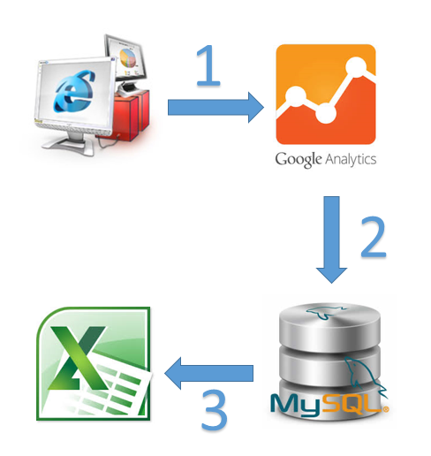
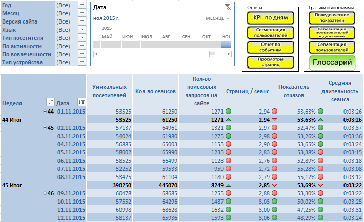
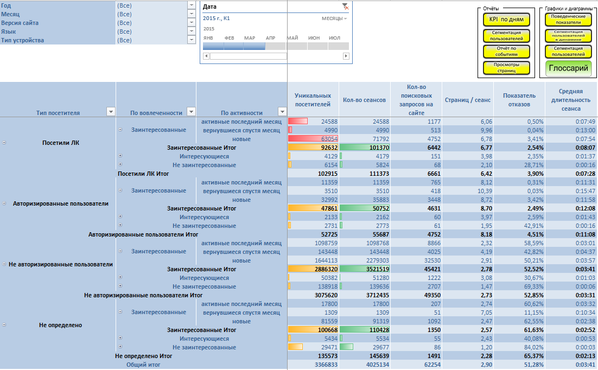
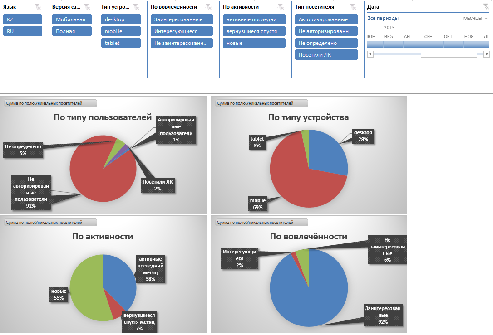
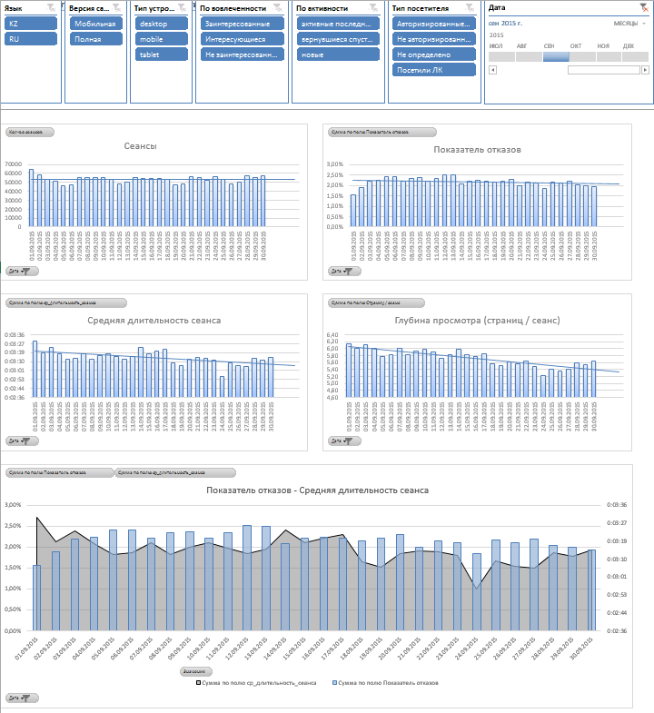
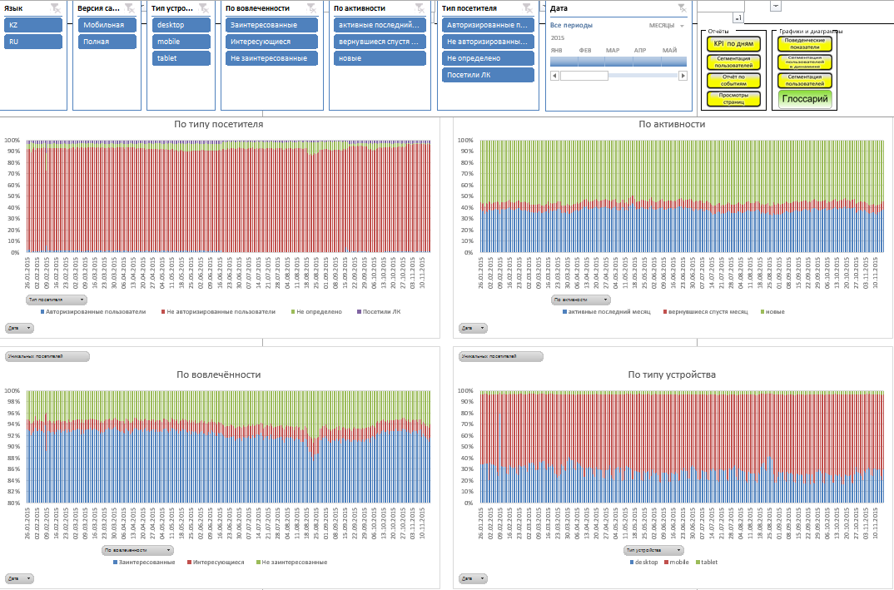
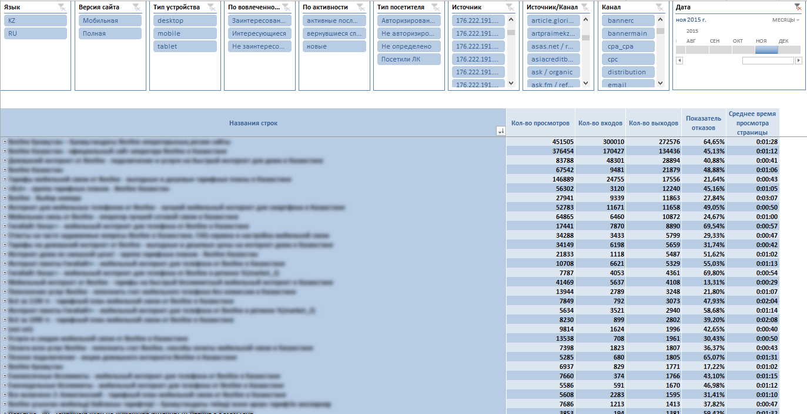

Как мы сделали инструмент веб-аналитики для сайта Ecommerce
В этом посте я подробно расскажу, зачем бизнесу собственный веб-аналитический инструмент, и приведу пример сделанного нами продукта. Но прежде давайте на секунду отвлечемся и рассмотрим, зачем онлайн-бизнесу вообще нужна веб-аналитика?
Об аналитике в Ecommerce
Любую аналитику можно сравнить с вождением автомобиля. Представьте, что вы садитесь за руль автомобиля, в котором не работает спидометр и остальные компоненты приборной доски, а самое главное, — в нем закрыто лобовое стекло, и вы просто не видите дорогу. Такой автомобиль, конечно, тронется с места, но вряд ли сможет уехать дальше ближайшего поворота. Профессионального аналитика можно сравнить со штурманом в спорткаре. Вряд ли вы доверите эту роль некомпетентному человеку.

В 2006 году, когда я только начинал свой путь аналитика, мне, наверное, было проще, чем новому поколению. В то время в качестве основного инструмента обработки и визуализации данных выступал Microsoft Excel 2003. С тех пор большинство компаний поняли ценность сбора и обработки информации, и, соответственно, объемы данных росли с каждым годом в геометрической прогрессии. Сейчас, несмотря на то, что рабочий лист Microsoft Excel 2013 позволяет хранить 1048576 строк (что в 17 раз больше, чем было возможно в Microsoft Excel 2003), для решения большинства задач не достаточно существующих на рынке инструментов Технологии сбора, обработки и визуализации данных развиваются с той же скоростью, что и объемы накопленных данных. Для решения задач, связанных со сбором и обработкой данных, на смену MySQL и прочим реляционным базам данных пришли облачные базы данных (Postgres Plus, Microsoft Azure, Google BigQuery), способные за несколько секунд обрабатывать терабайты информации.
На смену Microsoft Excel пришел целый ряд мощных BI платформ, таких как QlikView, Tableau и Bime, которые могут связывать и визуализировать в реальном времени информацию из множества источников данных, да и сам Excel с появлением надстройки Power Pivot и Power Query в 2010 году из обычного процессора электронных таблиц превратился в полноценную BI платформу.
С развитием технологий сбора, обработки и визуализации данных требования к аналитикам возросли. Сегодня аналитик должен разбираться во множестве баз данных, а также в десятках платформ, направленных на обработку и визуализацию информации. Неправильная интерпретация информации влечет значительные потери для компании. Именно поэтому грамотная работа с аналитикой так важна для целей бизнеса на всех этапах — выход на рынок, маркетинг, масштабирование. Еще 15 лет назад можно было посоветовать отдать аналитику бизнеса на аутсорс, пять лет назад — взять в штат специалиста, который умеет качественно работать с традиционными инструментами.
Современное решение вопроса — создание веб-аналитического продукта, кастомизированного под особенности и цели конкретного бизнеса. При этом данное решение не отменяет специалиста-аналитика в штате или определенных аналитических навыков менеджера, использующего данный продукт.
Создание веб-аналитического инструмента
В ноябре 2014 года к нам обратился клиент. Он хотел анализировать события на своем сайте и получать ответы на нетривиальные вопросы в виде отчетов, которые нельзя было построить в Google Analytics. Но при этом не было 100% понимания, какие именно отчеты ответили бы на вопросы бизнеса. Совместно с клиентом мы прописали список параметров и метрик, необходимых для получения ответов. На основе собранных и подсчитанных данных была построена система автоматически обновляемых нетривиальных отчетов. Файл ежедневно автоматически обновляет все отчеты при открытии, потому что визуализация данных была связана с ежедневно обновляемой MySQL базой данных, в которую посредством API информация дублировалась из Google Analytics.

Схема процесса сбора, агрегации и визуализации данных
- Google Analytics собирает информацию о всех сеансах на сайте.
- С помощью API информацию, собранную в Google Analytics, мы агрегируем и затягиваем в базу MySQL.
- Файл Excel подключается к базе MySQL и при каждом открытии отправляет запрос на получение актуальных данных, тем самым обновляя все таблицы и диаграммы.
План работ
- Разработать под запрос клиента базу данных на MySQL со всей информацией, которую хотел бы анализировать клиент. 2. Написать скрипт для ежедневного наполнения базы данными за вчерашний день. 3. Сегментировать трафик по активности, вовлеченности и типу посетителя. По заинтересованности:
- незаинтересованные (сеансы длительностью до 60 секунд);
- интересующиеся (сеансы длительностью 60-180 секунд);
- заинтересованные (сеансы длительностью более 180 секунд).
По активности:
- новые (количество дней с последнего посещения — 0);
- активные в последние две недели (количество дней с последнего посещения — 1-30);
- вернувшиеся спустя две недели (количество дней с последнего посещения — более 30).
По типу посетителя:
- авторизованные посетители (авторизовались, но не заходили в ЛК — личный кабинет пользователя на сайте);
- пользователи ЛК (посетившие ЛК);
- другие (не посетившие ЛК).
По версии сайта:
- полная;
- мобильная.
По языковой версии сайта:
- RU (Русский);
- KZ (Казахский).
По типу устройства:
- Desktop;
- Mobile;
- Tablet.
- Настроить визуализацию данных с возможностью различной фильтрации в Excel-файле, который связан с базой MySQL. Все отчеты в данном файле настроены на автоматическое обновление раз в сутки.
Разработка данного BI решения заняла 27 часов. Настраивался сбор данных из Google Analytics напрямую в MySQL базу.
Результат
Теперь несколько слов о возможностях созданного нами инструмента веб-аналитики. Наше решение позволяет:
- Смотреть объем трафика и поведенческие показатели по дням.
- Выводить сегментацию посетителей в форме отчета.
- Отображать сегментацию посетителей в форме диаграмм.
- Показывать изменение поведенческих показателей.
- Показывать ценность нового контента.
- Сравнивать показатели отдельных страниц сайта.
Остановимся на каждом пункте чуть подробнее.
1. Объем трафика и поведенческие показатели по дням

В данном отчете можно проанализировать ежедневную динамику изменений поведенческих показателей, а также прирост посетителей. Присутствует возможность фильтровать отчет по мобильной или полной версии сайта, по языковой версии, по типу посетителя, по активности и вовлеченности посетителей, а так же по типу устройств.
2. Сегментация пользователей в отчетах

Данный отчет позволяет сравнить разные сегменты посетителей, а также посмотреть долю каждого сегмента. Например, вы можете проанализировать, какой процент ваших посетителей является вовлеченным и заинтересованным.
3. Сегментация пользователей в диаграммах

Представленные выше диаграммы дают понимание той же информации, что и отчет по сегментации пользователей, но уже в более удобном, графическом виде.
4. Изменение поведенческих показателей

Эти диаграммы позволяют отслеживать изменение поведенческих показателей и отображают линейный тренд с прогнозом на несколько шагов вперед. Также можно оценить влияние средней длительности сеанса на показатель отказов.
5. Определение ценности нового контента

Благодаря графикам структуры трафика в динамике можно оценить релевантность контента. Точнее, повышает ли новый контент заинтересованность посетителей, становятся ли они более активными. Также показывается соотношение трафика с различных типов устройств.
6. Показатели конкретных страниц сайта

Этот отчет поможет вам определить страницы с высоким показателем отказов, либо те, на которых пользователи не задерживаются. Вы сможете узнать, контент каких страниц стоит проработать более детально. Наш клиент получил готовый инструмент с возможностью аналитики различных действий посетителей на сайте. В соответствии с этими данными можно принимать четкие решения — как развивать свой проект в будущем. Представленный в кейсе инструмент обладает широкими возможностями, и все-таки это малая часть того, что могут предложить бизнесу BI решения. Так что настоятельно советую изучать аналитику для развития онлайн-проектов.
Со своей стороны, отдел веб-аналитики Netpeak всегда готов помочь с созданием полезных вам продуктов.
Оригинал публикации на блоге Netpeak.